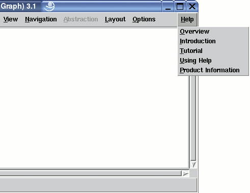

Manual
Help Menu
The "Help" menu contains operations that provide user help facilities. To show help information about a particular topic, the web browser installed on the computer is instructed to display pages of the uDraw(Graph) HTML online documentation. This requires proper installation or a manual configuration of the help system in the Options/General Settings... dialog window.
Note: menu operations can also be invoked without the mouse by using keyboard commands.
Help Facilities of the Online Documentation
-
Overview
Instruct the web browser to display the main page of the online documentation. -
Introduction
Instruct the web browser to display the introduction page of the online documentation. -
Tutorial
Instruct the web browser to display the tutorial page of the online documentation. -
Using Help
Instruct the web browser to display the page about using the online documentation. -
Product Information
This operation shows the dialog window with product information. It is the same window that appears when menu View/Product Information... is used.
Copyright © 2005, Universität Bremen. All rights reserved.